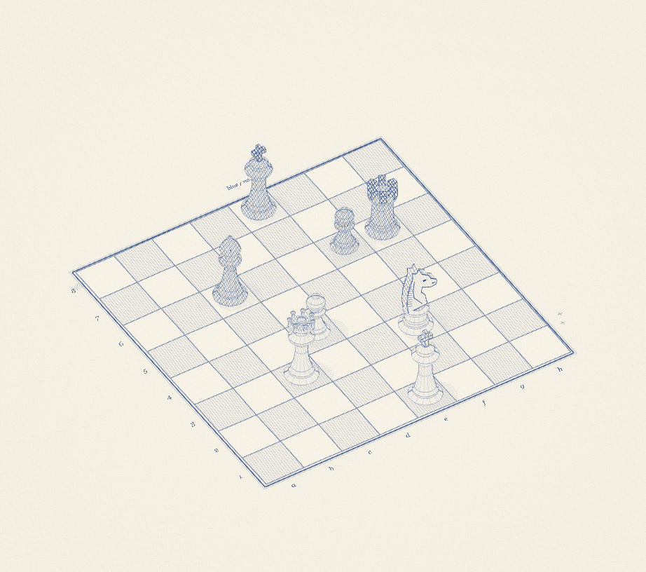

BALLPOINT / COMPOSITION
インクの盤上.
青い線を重ねて、
まだ名前のない一局を。

この環境では立体表示を開けませんでした。
別のブラウザでお試しください。
自由に並べるスケッチ盤8 pieces
駒を選んで、空いたマスへ。好きな景色に並べてください。
BALLPOINT / COMPOSITION
青い線を重ねて、
まだ名前のない一局を。

この環境では立体表示を開けませんでした。
別のブラウザでお試しください。
駒を選んで、空いたマスへ。好きな景色に並べてください。